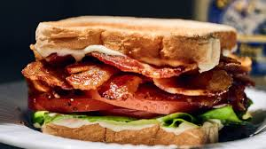

BLT Sandwich

How to make a BLT Sandwich
This recipe will show you how to make a great BLT sandwich
Ingredients
- Loaf of bread
- Mayo
- Lettuce
- Tomatos
- Cooked bacon
Steps
- Toast the bread
- Cook the bacon until crispy
- Slice the lettuce and tomatos
- Layer the ingredients in this order
- Bread
- Mayo
- Lettuce
- Tomotos
- Bacon
- Mayo
- Bread
- Slice on the diagional and serve